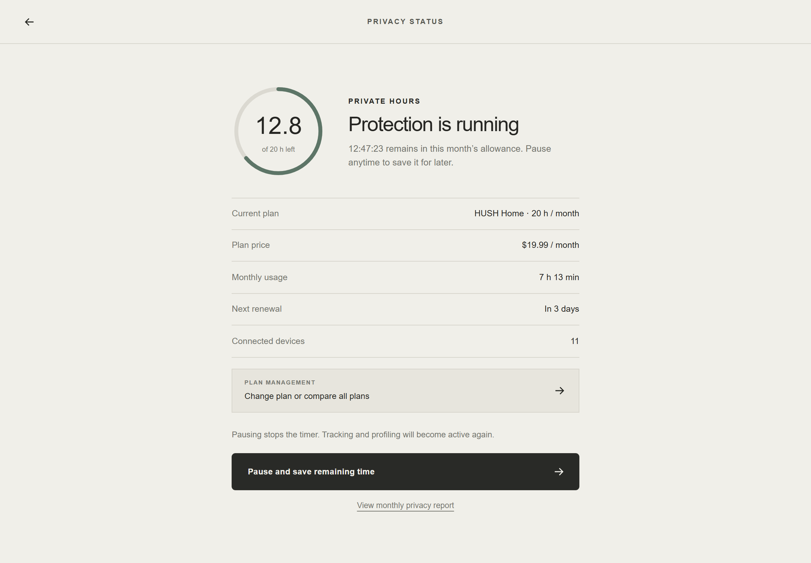
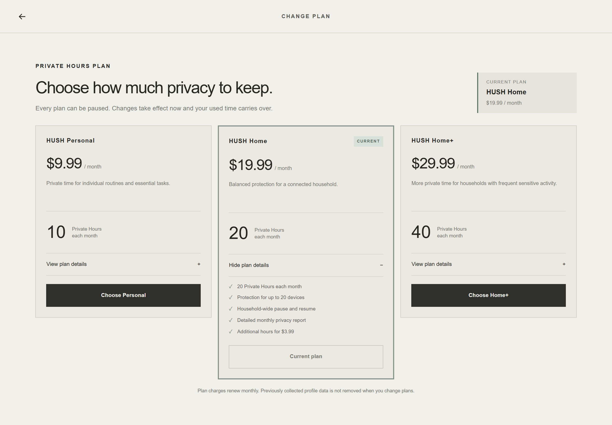
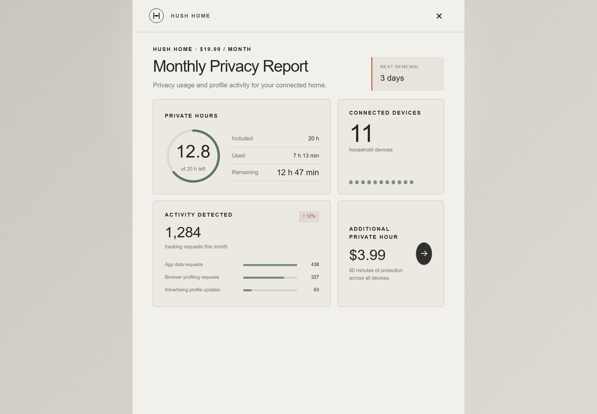
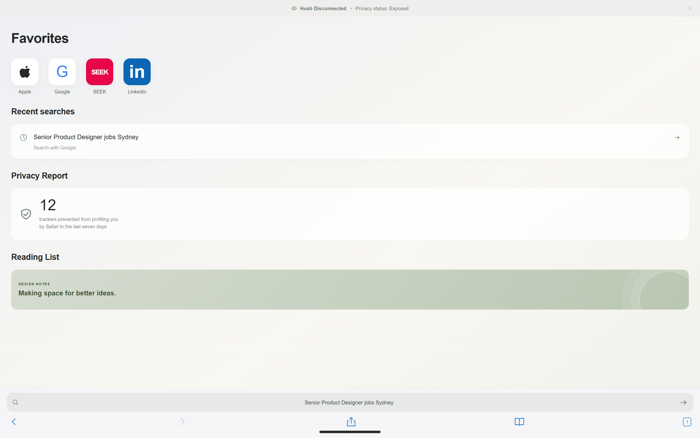
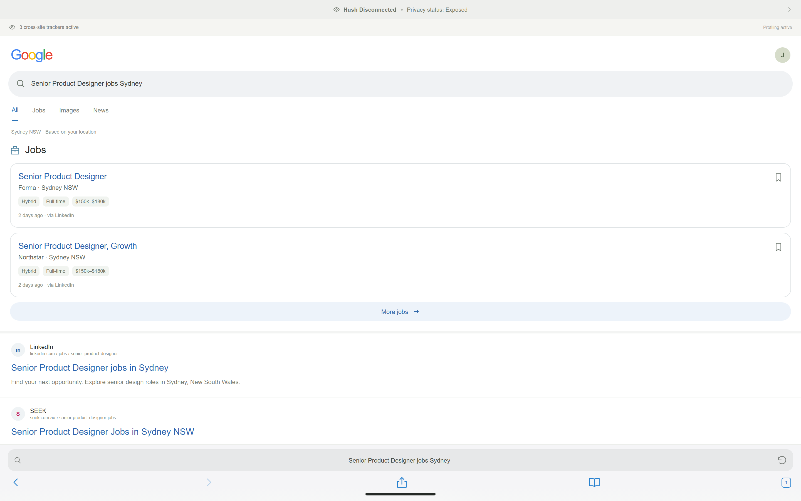
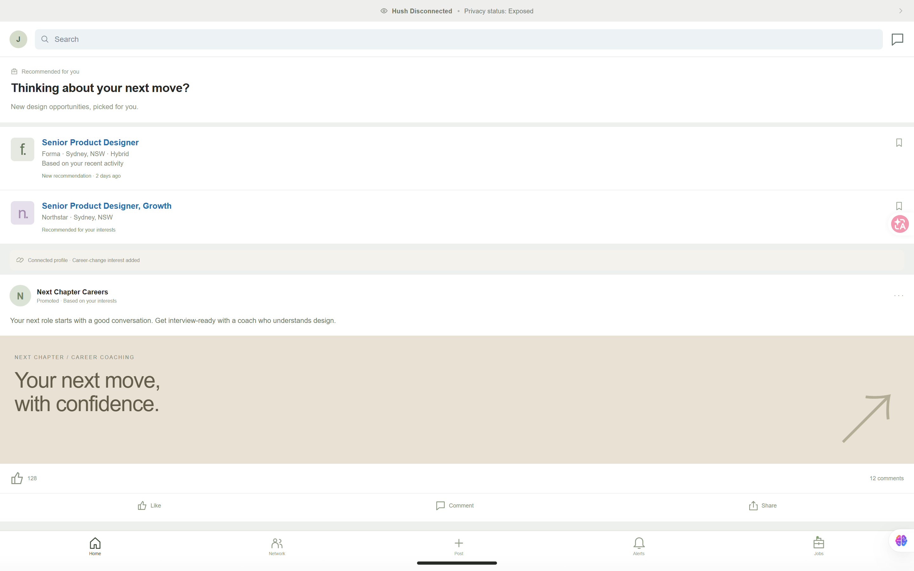
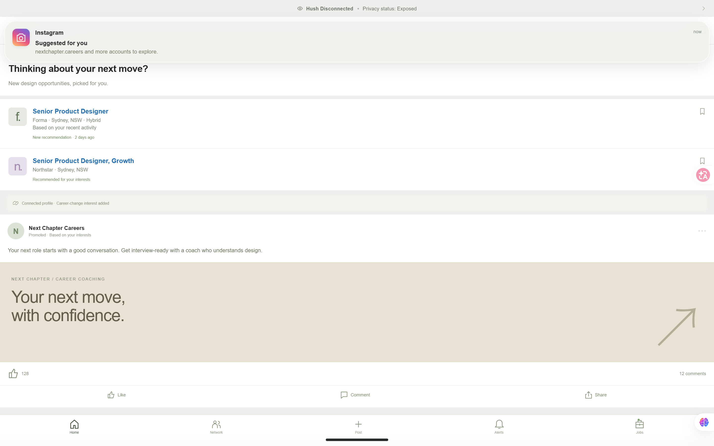

A home privacy utility from 2046. Twenty Private Hours a month, shared by everyone on the Wi-Fi.
Group UNLIMITED · Tutorial 03 Group B (HELENA B)
Jinge Gao · Jing Wang · Di Luan · Yini Chen Submitted 8 November 2026
Overview
Privacy, by the hour.
In 2046, tracking is part of the plumbing of every home. Apps, browsers, TVs and appliances share data by default, and that is simply how the internet works. HUSH is the box on the hallway shelf that can make it stop, for a while. Each household buys a monthly allowance of Private Hours. While a session is running, participating services stop tracking, profiling and sharing for every device on HUSH Wi-Fi. When the hours run out, nothing breaks. The Wi-Fi keeps working, and the data starts flowing again.
The fiction does not ask whether HUSH works. It asks what happens to people when privacy turns into a balance they have to spend. Which moments are worth an hour? Who in the house decides? And what happens to the searches made while everyone was saving time for later?
This document is written in two voices. The in-world artefacts (device, interface, quick-start guide, advertisement) speak as HUSH in 2046 and are shown without commentary. Process pages, marked with a kicker line at the top, explain how and why we made them.
Contents
01
Faint signals, what-if and archetype
02
The world of HUSH: rules of 2046
03
Design development
04
Artefact: the HUSH Home device (physical model)
05
Artefact: the HUSH Home interface (Figma prototype)
06
One evening in 2046: the scenario
07
Instruction set: HUSH Home Quick Start Guide
08
Advertisement: magazine insert
09
Critical questions
10
Presentation slides (Week 11)
11
Generative AI usage record and prompts
HUSH · Group UNLIMITEDOverview
01 · Process · Faint signals
Five things already happening.
We started from present-day signals that are small on their own. HUSH is what you get if all five keep growing at once and nobody stops them.
S1
Tracking follows us across devices
Advertising IDs, logged-in accounts and shared home networks let a search on a laptop shape the ads on a phone and the suggestions on a TV.
Cross-device graphs, smart-TV viewing data, "recommended for you" everywhere.
S2
The home is a network of reporting devices
Routers, speakers, TVs and appliances are connected by default. Each one talks to its maker, and the router is where all of it leaves the house.
Connected appliances, smart-home hubs, ISP-supplied routers with apps.
S3
Owning turns into subscribing
Software, music, storage and even hardware features are rented month by month. A feature you already own can sit locked until you pay.
Subscription-unlocked car features, cloud storage tiers, app "premium" plans.
S4
Privacy is already for sale
"Pay or consent" models offer an ad-free, less-tracked tier for a monthly fee. Privacy tools are sold as add-ons to the services that track us.
Paid ad-free social media tiers, VPN bundles, email masking, data-removal services.
S5
We ration invisible resources by the number
Prepaid electricity, mobile data allowances and screen-time limits teach us to budget things we can't see by watching a number on a screen go down.
Prepaid meters, data caps, "you have 2 GB left this month".
Projecting forward · a plausible path, not a prediction
2026Today
Ad-free tiers cost extra. Privacy tools are add-ons. Data caps and prepaid meters are normal.
~2032Privacy bundles
Internet providers bundle "tracking-free" modes with their routers, sold as a monthly upgrade.
~2038Participating services
Major platforms agree to honour a household "private" signal, but only for paying networks.
~2042Metered privacy
Unlimited plans become too expensive. Households switch to hour allowances, like data plans.
2046HUSH Home
20 shared Private Hours a month, $19.99. A white box on the hallway shelf counts them down.
HUSH · Group UNLIMITEDFaint signals
01 · Process · What-if and archetype
What if
What if privacy was no longer a right, but a subscription, metered by the hour and shared by the household?
Why this question
Signals S1 to S4 already put a price next to privacy. S5 shows how people behave once something is metered: they save it, ration it and argue about it. Put together, privacy stops being a default and becomes a budget. The interesting design question is no longer "is my data safe?" but "is this search worth one hour?"
We set the world about 20 years ahead, in 2046, close enough that HUSH feels like an ordinary purchase rather than science fiction. Nothing in the device is magic. It depends on a participating-services protocol: during a paid session, services agree to stop new tracking for the household. This is our fictional assumption. Today's routers cannot do this.
Familiar archetype
Wi-Fi router × prepaid meter
HUSH borrows its form from two objects everyone already lives with:
Borrowed from
What it brings
Home Wi-Fi router
Sits on a shelf and is ignored. It is the one point every device passes through, so it is a believable place for household privacy to be switched on and off.
Prepaid utility meter
A big countdown number, a top-up price and a renewal date. It turns an invisible resource into something you can see running out.
Subscription app
Plans, upgrades, monthly reports and a small "Buy 1 hour" button that is always within reach.
The device stays deliberately boring: a white box with a timer. We wanted the critique to sit in the everyday rules around it, not in a dramatic gadget. This answered the W11 feedback to avoid a generic, feature-heavy smart-home dashboard.
Mundane, not dystopian
Nothing in the world is evil. HUSH is a helpful product with fair-sounding rules, and that is why it is unsettling.
Diegetic first
The device, interface, guide and ad speak only as HUSH would in 2046. The critique has to come through their own words and numbers.
Questions, not answers
Visitors press Pause themselves. The consequence shows up on someone else's screen a few minutes later, and they connect the two.
HUSH · Group UNLIMITEDWhat-if and archetype
02 · Process · World rules
The rules of 2046.
Rule
In the world of HUSH
Plans
HUSH Personal 10 h · $9.99 / month HUSH Home 20 h · $19.99 / month HUSH Home+ 40 h · $29.99 / month
Extra time
Add 1 Private Hour for $3.99 (60 minutes, whole home)
Shared clock
One hour covers every device on HUSH Wi-Fi at once. Eleven devices do not use eleven hours.
Pause
A session can be paused to save time. While paused, tracking and profiling are active again.
Subscribe first
Protection cannot start until a plan is paid for.
Household
Any member can request a pause. Others can choose Keep me private or Step out.
Running out
At 00:00 the Wi-Fi keeps working. Default sharing resumes on every device.
The past
Buying more time later never removes data that was already collected or profiles that already exist.
Renewal
Hours renew monthly. Unused hours expire.
What HUSH does not do
HUSH does not listen to the room, read messages or hide what you deliberately send. A booking, an email or a submitted form still reaches its service. HUSH only stops new tracking, profiling and identity-linked sharing by participating services, and only on its own Wi-Fi.
Where the friction lives
We kept the rules plain and ordinary on purpose. The critique comes from the way they interact:
• Pausing to save hours means choosing to be tracked now so you can be private later.
• One shared clock means one person's private moment spends everyone's allowance.
• The past is permanent, so paying only ever protects the future.
• The session log keeps the start and end times of every session "for billing", which records when a household wanted privacy.
HUSH · Group UNLIMITEDWorld rules
03 · Process · Design development
From wall hub to hallway shelf.
W11: circular wall hub. Dark smart-home panel, 0:00 remaining. Feedback: strong concept, but it read like a generic future Nest, and the audience had nothing physical to touch.
Router with a screen. We moved to a tabletop router with a live screen: an iPad in a white frame, so people can actually press Pause.
Colour and antennas. AI concept sketches tested clay antennas and colour blocking on the frame. They looked craft-made, not like a product.
Colour-blocked frame. Explored, then dropped. A quiet white object fits a utility that people stop noticing.
Final: a white, antenna-free device
The built model is a white frame and card mat around an iPad running the final Figma prototype, with the HUSH wordmark below the screen. The interface moved from a dark dashboard to a cream, mostly typographic screen: one big countdown, one button, and a black band listing what is being shared right now. The fewer features it shows, the more the single number matters.
Concept images in this row were AI-generated as sketches during development; see the AI usage record. The photograph on the left is of the real model.
HUSH · Group UNLIMITEDDesign development
04 · Artefact · HUSH Home device
Exhibition setup. HUSH Home on the desk with protection active, the laptop running the browser simulation, and the campaign poster on the wall.
Front, hours exhausted. 00:00 remaining, 20 / 20 hours used, renewal in 3 days, 11 devices connected. Protection is inactive, and every category in the black band reads Active.
How it is made
White photo frame, white card mat strips to close the gaps above and below the screen, and an iPad running the final Figma prototype full screen. The frame rests on a rigid stand so the screen stays touchable.
What visitors do
Press Pause and watch the black band switch from Blocked to Active. Open the hours ring, compare plans, read the monthly report. Then search for a job on the laptop next to it.
HUSH · Group UNLIMITEDArtefact · device
05 · Artefact · HUSH Home interface
Home, protection active. 12:47:25 left this month. One button: Pause. "11 devices protected"; every category is Blocked.
Paused, time saved. The clock stops, and so does the protection. App tracking, profiling, data sharing and ad personalisation are all Active again.

Privacy status. 12.8 of 20 h left. "Pausing stops the timer. Tracking and profiling will become active again."

Change plan. "Choose how much privacy to keep." Personal 10 h, Home 20 h, Home+ 40 h. Small print: previously collected profile data is not removed.

Monthly privacy report. 1,284 tracking requests this month (up 12%), 63 advertising profile updates, and the $3.99 extra hour one tap away.
Interactive prototype
Built in Figma and run full screen on the iPad inside the physical model. All screens on this page are captured from the live prototype.
banner-dish-90173388.figma.site
The interface never says privacy is a right, and never says tracking is bad. It only reports quantities: hours, devices, requests, dollars. That neutrality is the point.
HUSH · Group UNLIMITEDArtefact · interface
06 · Scenario · Monday 15 September 2046, 8:42 PM
One evening: saving time, spending privacy.
01 · 8:42 PM
Three days before renewal, the household has 12 h 47 min left. Protection is running.
02 · PAUSE
J. pauses HUSH to save the remaining hours for the weekend. It feels responsible: "time saved".

03 · HUSH DISCONNECTED
On the laptop, J. types a search they haven't told anyone about: Senior Product Designer jobs Sydney.

04 · PROFILING ACTIVE
The results page notes "3 cross-site trackers active". Jobs are shown "based on your location".

05 · PROFILE UPDATED
On LinkedIn, the connected profile now reads "Career-change interest added". A career coach is promoted "based on your interests".

06 · EVERYWHERE
Instagram suggests nextchapter.careers. Resuming HUSH now protects the next search, but this one is already on the record.
HUSH · Group UNLIMITEDScenario · browser simulation: feed-test-35321007.figma.site
07 · Instruction set
HUSH Home Quick Start Guide
The in-box booklet: eight A5 pages, shown two to a spread. It covers setup (subscribe before you start), pausing, the monthly report, how a household shares one clock, what happens at 00:00, troubleshooting (malfunction scenarios), and the small print.